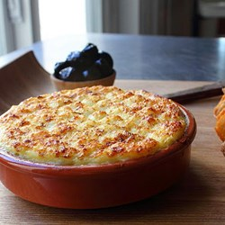
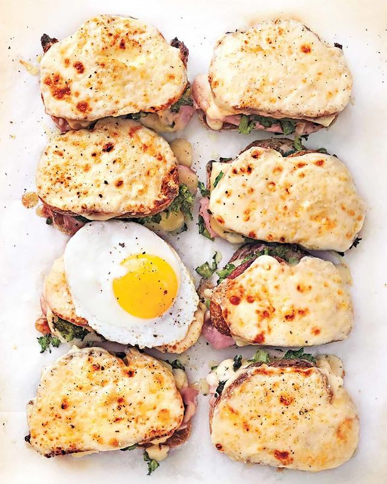
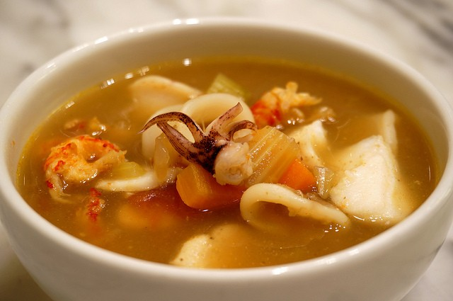
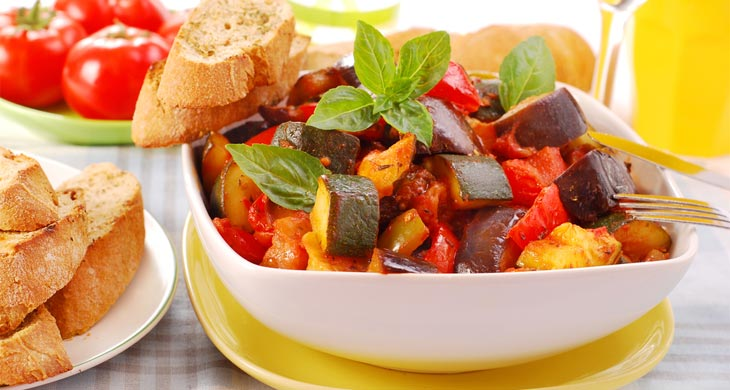

Appetizer

Brandade
Salted cod pureed with milk and olive oil
including mashed potatoes and garlic baked in the oven
Choices of Ingredients : Milk or Cream
 Cheese Puff Gougeres
Cheese Puff Gougeres
Burgundish Gougeres traditionally made with Gruyere cheese
Freshly baked from the oven
Choices of Ingredients :
A selection of cheese comprising : Emmenthal, Conte or Gruyere
 <Cretons de Chez-Nous
<Cretons de Chez-Nous
Rich flavoured spread of pork and pork fat
with seasonings good to be eaten along with butter toast
Choices of Ingredients : More non-fat or More fat

Croque-Monsieur
Freshly baked ham and cheese sandwich
Choices of Toppings : Grated Cheese or Salt and Pepper
 Deep Fried Brie
Deep Fried Brie
Deep Fried Brie coated in egg
and covered with bread crumbs
Choices of Ingredients : cubed cheese or melted cheese
 Escargot Mushroom
Escargot Mushroom
Snails in a pool of golden butter sauce
Served with a crispy and crusty french baguette
Choices of Sauce : Golden Butter Sauce or Garlic Sauce
Main Course

Bouillabaisse
A classic fish stew from Marseille
Choices of Fish : red rascasse, sea robin or European conger
 Coq Au Vin
Coq Au Vin
Traditional chicken braised in wine with lardons, mushrooms and garlic
Choices of wine used : Red Burgundy or Serious Beaujolais
 Duck a Lorange
Duck a Lorange
Classic French dish with roasted duck served with Orange sauce
Choices of Sauce : Orange Sauce or Bigarade Sauce
 Foie-Gras
Foie-Gras
Fattened Liver of a duck served with duck juice
Choice of Animal used : Duck or Goose

Ratatouille
A traditional vegetable dish consisting :
onions, zucchini, tomatoes, eggplant and pepper
Fried or Stewed in Oil. Served Cold.
Choices of Serving : Hot or Cold
 Steak-frites Beef Steak with French Fries
Steak-frites Beef Steak with French Fries
Beef Steak with a mountain of french fries
Choices of Cooking : Well-Done, Three-Quarter-Done or Half-Done
Dessert
 Chesnut Souffle
Chesnut Souffle
Chesnut Puree folded into custard baked into an airy souffle
Choices of souffle : Plain or Chesnut
 Creme Brulee
Creme Brulee
Traditional French dessert of custard topped by caramelized sugar
Choices of Cooking : Burnt or Not Burnt
 Macaron
Macaron
A sweet meringue confection made with egg white, sugar and almond
Choices of Ingredients : White Sugar or Brown Sugar
 Madeleines
Madeleines
A traditional small cake or cookie baked in special molds
to give them a delicate shell shape
Choices of Toppings : Plain or Cream

Panna Cotta
A sweetened creamed dessert thickened
with gelatin with butter and milk included
 Poach Pears Belle Helene
Poach Pears Belle Helene
Traditional dessert made with pears poached in sugar syrup
served with ice-cream
Choices of Toppings : Sugar syrup or Chocolate Syrup